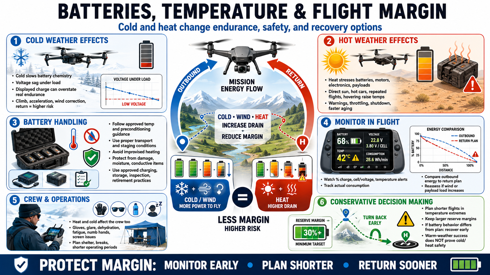

Heat, Cold, and Battery Management
Connecting to LMS... Progress: in progress

Narration
Cold reduces battery chemical performance and can cause voltage sag under load. Usable endurance may be shorter than the displayed charge suggests, especially during climb, acceleration, wind correction, or return.
Follow approved battery-temperature and preconditioning guidance. Keep batteries within appropriate transport and staging conditions, confirm status before launch, and avoid improvised heating. Plan shorter flights and larger reserves in the cold.
Heat stresses batteries, motors, electronics, mobile devices, and payloads. Direct sun, hot vehicles, repeated flights, hovering, and processor load can raise temperatures beyond ambient conditions. Warnings, throttling, shutdown, or accelerated aging may follow.
Storage and transport are part of weather management. Protect batteries from physical damage, extreme temperature, moisture, and conductive materials. Use approved charging, storage, inspection, and retirement practices.
Monitor battery percentage, voltage or cell information when available, temperature alerts, actual consumption, and unexpected changes. Compare outbound energy use with the return plan, especially when wind or payload load increases.
Crew performance also changes in heat and cold. Gloves, glare, dehydration, fatigue, numb hands, and screen behavior can slow decisions, so plan shelter, breaks, and shorter operating periods.
Conservative reserve margins preserve options. If battery behavior differs from the plan, recover early. Do not use a successful warm-weather flight as evidence that the same route is safe in cold, heat, or strong wind.